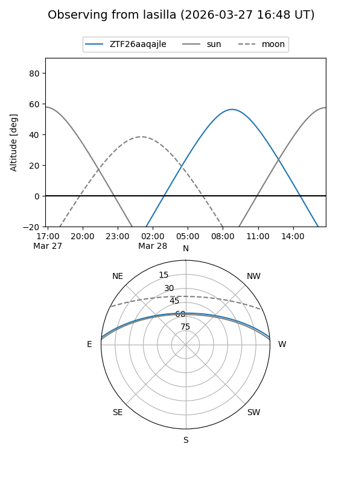
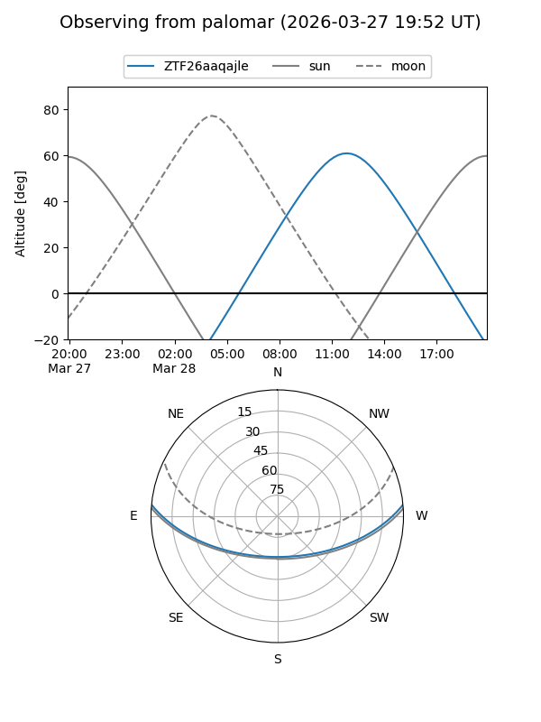

ZTF26aaqajle
Target ZTF26aaqajle at 2026-03-28 13:06
Aliases and brokers:
FINK: link
Lasair: link
ALeRCE: link
alt names
ZTF26aaqajle (ztf,fink_ztf)
Coordinates:
equatorial (ra, dec) = 246.5422,+4.41006
equatorial (HMS+DMS) = 16:26:10.12,+04:24:36.20
galactic (l, b) = (18.8967,+34.09753)
Flags:
Photometry:
last ztfg=19.16
1 ztfg detections
Lightcurve
Visibility


Additional plots